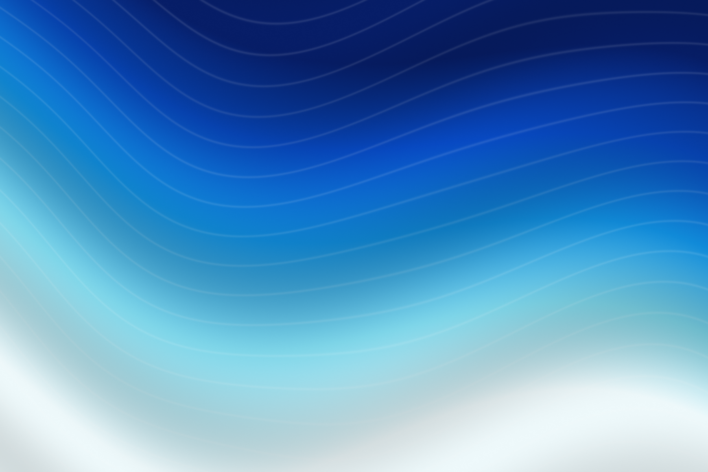

Glass,in motion.
Real refraction. Spring-driven controls. A small JavaScript library for interfaces that feel a little more alive.
Build with glass
Light has a wayof changing things.
Original materials. Real pixels. Try the lens with your pointer, touch, or arrow keys.
A familiar feel.
Eleven custom elements, with the interaction already built in. Use your HTML. Keep your framework.
Go ahead.
Touch everything.
Slide, switch, press and drag. Native inputs do their job while the glass follows with a spring.
lg-switch lg-sliderlg-segmented lg-panel
Your space.
A clear response.
A menu opens where you expect it. A button gives under your hand. A toast confirms that something happened.
lg-menubar lg-menulg-button lg-toast
Clear and present.
The lens above is lg-lens. All eleven elements use the same optical engine. Or build your own with the core API ↗
Less work.
Same pixels.
Less time generating lens maps. The current and previous optimized builds produced identical map pixels in the recorded comparison.
less map-generation time
for a 640 × 360 panel
Median of 7 recorded paired runs. All 640 compared maps were byte-identical. Animation results vary; the saved trials show no general FPS gain.
Read the measurementsLoading recorded measurements…
Recorded 6 November 2026 · Apple M2 · headless Chromium
Compare the builds interactively ↗
Add a
little glass.
Copy two files. Import once.
The rest is your HTML.
No runtime dependencies.
No package manager required.
<script type="module"
src="./lib/components.js"></script>
<lg-button radius="14" refraction="18"
bezel="0.35" blur="0.5"
specular="0.4" specular-width="1"
style="--lg-tint: rgb(8 32 58 / .22)">
Hello, glass.
</lg-button>Download components.js + liquid-glass.js